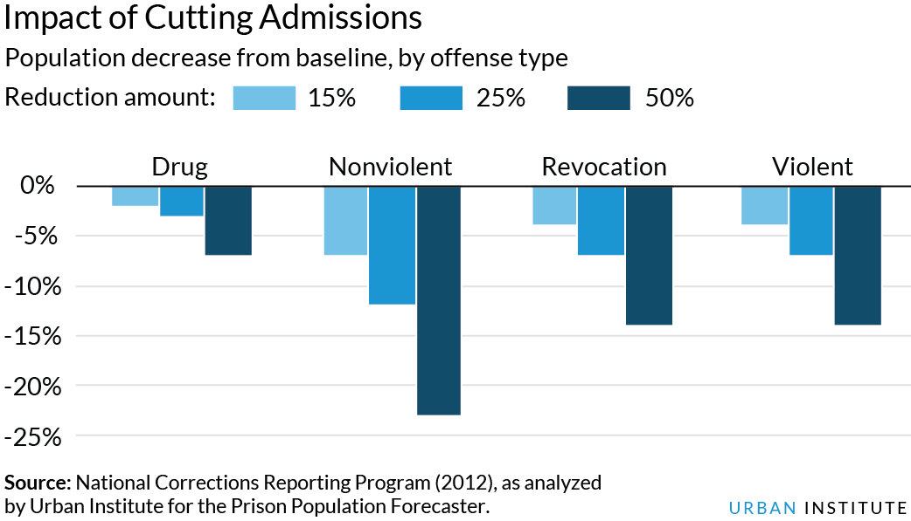
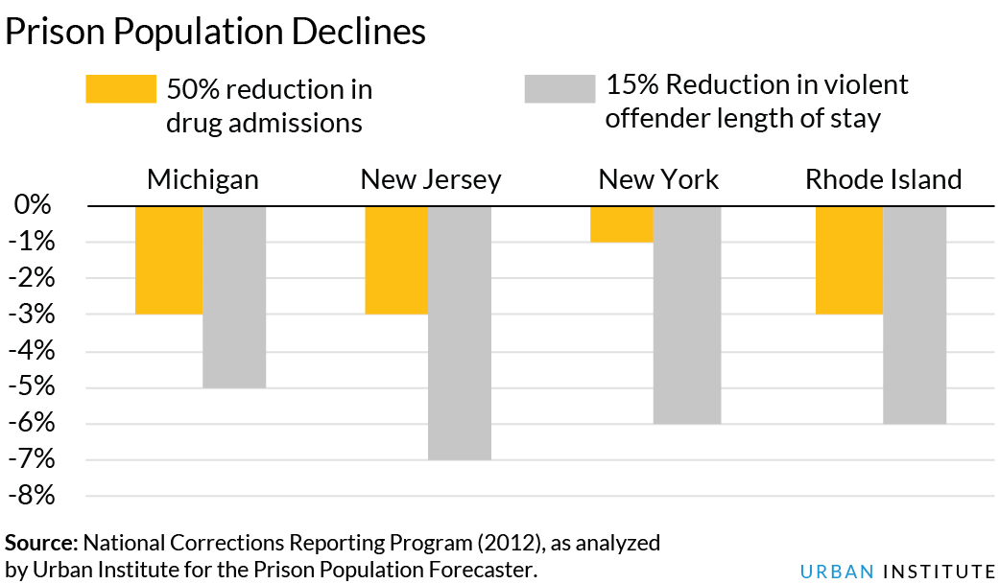
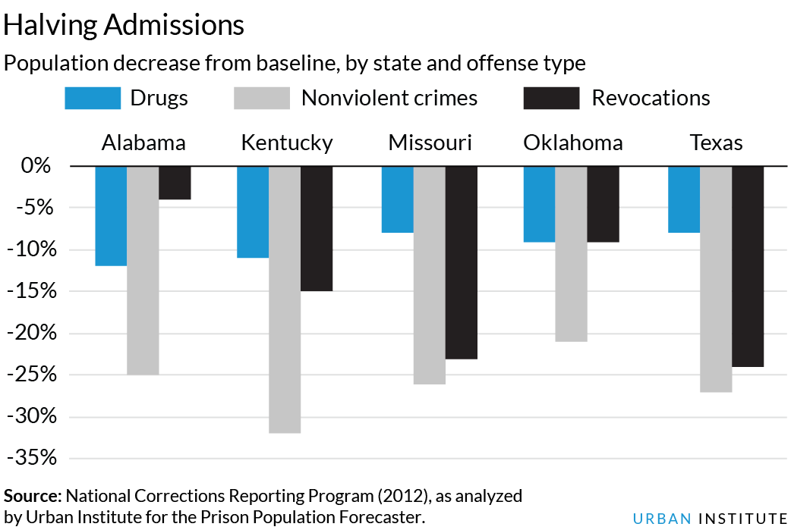

Features : : The Prison Population Forecaster

What it really takes to reduce mass incarceration
Ryan King, Bryce Peterson, and Brian Elderbroom
There is a rapidly expanding consensus that the widespread use of prison in the United States, commonly called mass incarceration, is a serious social and political problem that demands attention. As a result, reforms to the policies and practices that have resulted in exponential prison growth are being considered at the federal and state level. Today there are 2.3 million people locked up in prison or jail, and 7 million under correctional control (including probation and parole), and more than $70 billion spent annually on corrections. Research has shown that the substantial growth in correctional control over the last four decades is due to policy changes that put more people in prison and kept them there longer, not increasing crime. To the contrary, the prison population continued to grow as crime dropped to historic lows.
The challenges are daunting but gains have been made in recent years—the state prison population has declined three out of the last four years, after increasing for nearly four decades. While important symbolically, these declines are both modest and tenuous. Absent more significant policy changes than are currently being considered, states will not achieve meaningful and sustainable reductions in their prison populations.
What is The Prison Population Forecaster?
In order to advance the policy conversation and identify the reforms necessary to significantly reduce mass incarceration, the public and policymakers need to know the impact of potential policy changes. Too much of the current discourse focuses on specific populations (nonviolent versus violent offenses) without a detailed understanding of how policy changes affecting those populations would affect the size of the prison population.
Urban has developed a tool that uses data from 15 states, representing nearly 40 percent of the national prison population, to forecast population trends and project the impact of changes to rates of admission or lengths of stay in prison. Using these data, we are able to estimate the impact of several policy scenarios, such as reducing the length of prison time served for drug offenses. The tool can model broad policy changes in the 15 included states and provide important context to inform the mass incarceration conversation. The tool cannot be used to model multiple scenarios simultaneously, such as the impact of cutting admissions for drug offenses by 25 percent and property offenses by 15 percent. Urban intends to expand the tool to include data from more states, incorporate demographic data, and allow for modeling multiple policy scenarios.
A look at 15 states
After nearly 40 years of growth, the state prison population has begun to level in some states and decline in many others. The combined 15 state sample in the Forecaster follows that trend. If these states make no policy changes and current trends hold constant, the prison population is forecasted to decline two percent from June 2015.
Accelerating this decline in the prison population to reach levels frequently cited by criminal justice and prison reform thought leaders and advocates will require a fundamental rethinking of who we send to prison and how long they stay. For example, cutting total admissions in half, a lofty goal, would cut the population by 37 percent by 2022. Halving length of stay would cut the prison population by 39 percent. The types of policy change necessary to have that impact are far beyond the scope of the reforms currently being considered in many states.
Over the past few years, many states have begun to reform their drug laws and reduce the number of people admitted to prison for drug offenses. According to the Bureau of Justice Statistics, admissions to prison for drug-related crimes declined 22 percent between 2006 and 2011. Using the Forecaster, the scenario with a 15 percent reduction in drug admissions would result in a prison population that is 2 percent lower in 2022 than the projected baseline scenario of the same year. Cutting drug admissions in half would cut the prison population by 7 percent, or almost 33,000 fewer persons in prison by 2022. Reductions in length of stay of the same proportion for drug offenses would result in similar impacts on the prison population.
These numbers underscore that tackling mass incarceration will require reforms that go beyond drug offenses. About 1 in 5 people are in state prison for a drug conviction and far fewer for “low-level” offenses. Even if every person in state prison for a drug offense was released today, the challenge of mass incarceration would persist.
States have begun to reform sentencing policy for property offenses (e.g., raising the felony theft threshold) but these reforms affect a small number of people convicted of the least serious offenses. Policy changes that reduce admissions and length of stay for property offenses therefore hold great potential for reducing mass incarceration. Reducing property admissions by 50 percent, for example, has twice the impact of reducing drug admissions by the same amount.
Including all nonviolent offenses (drug, property, and other), the Forecaster projects that halving admissions would cut the prison population by 23 percent by 2022. This is a significant impact – there would be 110,000 fewer persons in prison just in these 15 states as a result. As with drug offenses, similar reductions in the length of stay in prison would result in a similar impact on the overall prison population.
Many states are also reconsidering how they address technical violations of supervision. This may include restricting how long someone stays in prison when returned for a technical violation or diverting those individuals from prison entirely. These reforms hold the promise of significantly reducing the prison population. For example, cutting in half the number of persons sent to prison for a revocation would result in a 14 percent reduction in the prison population.
Reducing prison time served for violent offenses
The national estimates obscure important variation between states. Each state has a wide range of policies that affect the length of prison sentences and release eligibility and the impact of making changes to admissions or length of stay policy will vary widely.
This is particularly true when exploring the effect of reducing admissions or length of stay for nonviolent and violent offenses. As previously discussed, many states have reduced prison admissions for drug possession and other less serious offenses. These reforms are a critical first step in alleviating the harms caused by incarceration and their positive impact on individuals, families, and communities should not be understated. They have also helped stem the tide of prison population growth. But with more than half of people in state prison incarcerated for a violent offense, significantly reducing mass incarceration will require addressing length of stay for crimes that are unlikely to be eligible for diversion programs.
In four of the fifteen states in the Forecaster (Michigan, New Jersey, New York, and Rhode Island) reducing length of stay for violent offenses by a modest 15 percent results in a larger prison population reduction than reducing drug admissions by 50 percent. In New York, which was one of the first states to revisit its mandatory minimum penalties and create alternatives to incarceration, reducing admissions for drug crimes by 50 percent results in only a 1 percent decline in the projected prison population—reducing length of stay for violent offense by 15 percent reduces the population by 6 percent.
Is there any “low hanging fruit” left?
In short: yes. While dramatically reducing the national prison population requires addressing long prison sentences and time served for violent offenses, reforms to drug laws and revocation policies will still go a long way in many states.
Nonviolent offenses are a major driver of the prison population in states such as Alabama, Kentucky, Missouri, Oklahoma, and Texas and reductions in admissions for drug and property crimes would have a big impact on incarceration rates. Halving drug admissions would cut the prison population by nearly 10 percent in each of those states and similar reductions in the number of admissions for all nonviolent crimes would cut one-quarter off the population. In Kentucky, halving admissions for nonviolent offenses would reduce the prison population by nearly one-third (32 percent).
The policy reality in Missouri and Texas stands in even starker contrast to states such as New York and New Jersey. In those states, reducing admissions for revocations of probation and parole supervision alone are projected to reduce the prison population by nearly 25 percent. Given that many of these revocations are likely due to technical violations, not involving a new crime, there is plenty of “low hanging fruit” to be picked for reform.
Conclusion
The mass incarceration debate too often gets mired in false choices between addressing the front- or back-end of the system (admissions versus length of stay) and the relative impact of focusing on nonviolent or violent offenses. What we do know is that reducing mass incarceration will be very challenging. No single policy change is sufficient to make meaningful reductions in the prison population and policymakers will need to explore a combination of reforms similar to those described here. This forecasting tool paves the way for a more productive conversation on the need for tailored reforms that address the unique drivers of mass incarceration in each jurisdiction.
In some states, limiting prison admissions to only new crimes and diverting all technical violations will have a substantial impact on the number behind bars. Other states will have to tackle how they address drug and property offenses through a mix of reforms to stem admissions and length of stay. Still others may discover that modest reductions in time served for people convicted of violent offenses are necessary to roll back mass incarceration. Pairing further reductions in admissions for drug and property offenses with reductions in length of stay for violent offenses is the surest way to meaningfully and sustainably reduce the prison population.